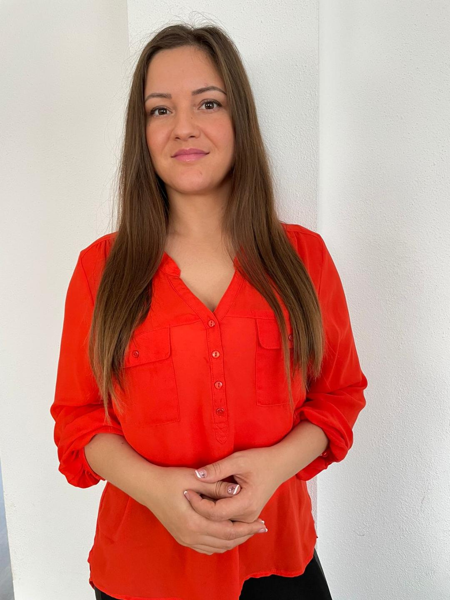

Ligia Holhos

Summary
Hardworking and focused Administrative professional offering
excellent communication, planning and prioritization skills
demonstrated throug teams results. Skilled at drafting reports and
business correspondence, managing mail and updating tracking
spreadsheets. Exceptional leadership skills with expertise in
streamlining workflow to optimize personnel strengths.
Education
- 2005-2009 High School
- Liceul Teoretic Onisifor Ghibu
- 2013-2016 Bachelor of Science: Nurse
- Hogskolan Kristianstad - Kristianstad, Sweden
Work Experience
- 2022 - Device Analyst
Global Complaint Mnagement, Wipro/ICU Medical
- Carrie out repports upon customer's requests
- Register cases in the client's internal system
- Provide assistance to customers, sales representative and employees by e-mail in English and Swedish
- Act as the first point of contact with customers
- Register verbal or written requests and/or complaints received from end users and escalate them, if necessary
- Process Product Replacement cases
- Continuously provide end-user data for timely incident resolution
- PC operating skills, MS Office package usage daily
- 2019-2020: Secretary
- Responded to emails and other correspondence
to facilitate communication and enhance
business processes.
- Welcomed the clients and gave them details
about the state of works
- Recorded and tracked operational expenses to
identify and eliminate wasteful spending.
- Communicate with the whole team and order
the auto parts so that the employee had always
all they needed to work
- I was in touch with the accountant
- I was the face of the company toward clients
and ensured the good function of the auto
service
- 2016-2019: Nurse
Region Skåne, Ängelholms Hospital, Orthopedic.
- Assessed patients to determine individual needs
and develop care plans in coordination with
multidisciplinary healthcare professionals.
- Educated patients and families on diagnosis,
neurological conditions and processes,
treatments and expected outcomes.
- Collaborated with physicians to quickly assess
patients and deliver appropriate treatment while
managing rapidly changing conditions.
- Assisted patients in performance of routine recovery and mobility exercises, providing
support when getting in and out of bed as well as
walking and stretching.
- Protected confidentiality of information related
to patient care activities and EMS operations.
- Remained calm during high-stress, critical
situations, demonstrating sustained focus and
problem-solving in real-time.
- Met with and patients to discuss and distribute
information on health maintenance and disease
prevention
Skills
- Customer service: ⭐️⭐️⭐️⭐️⭐️
- Microsoft Office Suite:⭐️⭐️⭐️⭐️
- Organizational skills: ⭐️⭐️⭐️⭐️
Languages
Other